For å bruker Heroku så må du først lage en bruker. Dette kan du gjøre på Heroku.com.
Å bruke heroku er helt gratis.
Trykk på "Create new app" og lag et navn for app'en din.
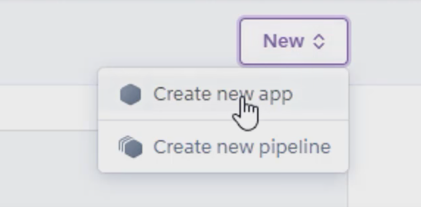
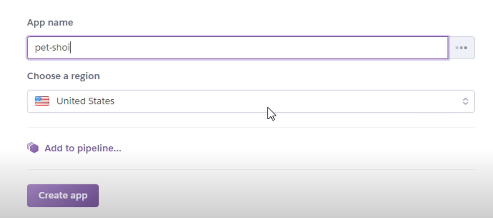
Gå ned til du ser "Install the Heroku CLI" og trykk på lenken. Velg hvilken version som passer for deg og din PC, og innstaller
programmet.
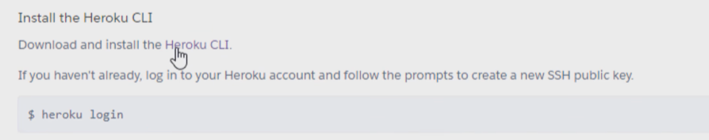
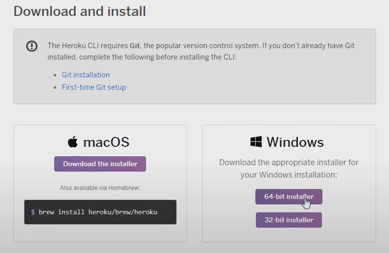
For å se om installasjonen gikk fint gå inn på Ledetekst (CMD) og skriv "heroku". Hvis det gikk fint vil du få opp Heroku commands.
Inne på terminalen til prosjektet skriver du "heroku login" i terminalen.
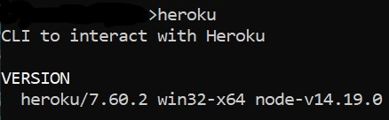
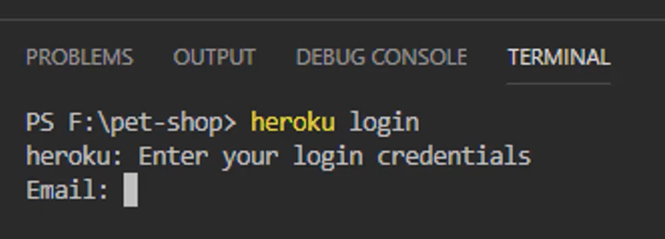
Så må du lage et git repository så du må skrive "git init". Så "heroku git:remote -a "navnet-på-heroku-app'en". Så legger du til
filene til heroku med "git add ." Så må du få alt opp til git ved hjelp av "git commit -am "beskrivelse av hva du har lagt til" Til slutt må du
laste alt opp til heroku ved hjelp av "git push heroku main""
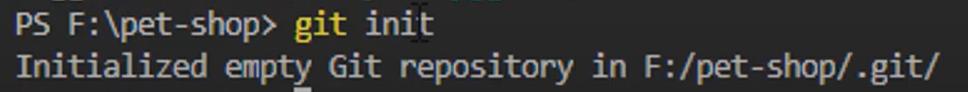
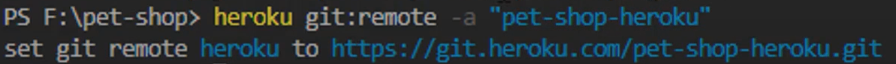
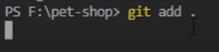
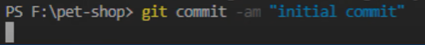
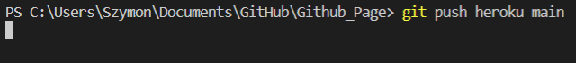
Til slutt skriver du "heroku open" og da har du gjort alt du trenger for å få opp et prosjekt på heroku.